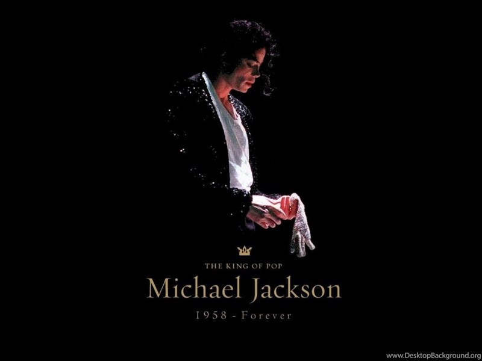

Tribute to MICHEAL JACKSON
The king of POP

Michael Joseph Jackson was born in Gary, Indiana, near Chicago, on August 29, 1958. He was the eighth of ten children in the Jackson family, a working-class African-American family living in a two-bedroom house on Jackson Street.
Life & Career
- In 1964, Michael and Marlon joined the Jackson Brothers. A band formed by their father which
included Jackie, Tito, and Jermaine as backup musicians playing congas and tambourine
- Later in 1964, Michael began sharing lead vocals with Jermaine, and the group's name was changed to the Jackson 5.
- 1965, Michael performed the dance to Robert Parker's 1965 song "Barefootin'" and sang the
Temptations' "My Girl" and the group won a talent show.
-
1966 to 1968, the Jacksons 5 toured the Midwest; they frequently played at a string of black clubs known as the Chitlin' Circuit as the opening act for artists such as Sam & Dave, the O'Jays, Gladys Knight, and Etta James. The Jackson 5 also performed at clubs and cocktail lounges,
where striptease shows were featured, and at local auditoriums and high school dances.
-
August 1967, while touring the East Coast, they won a weekly amateur night concert at the Apollo Theater in Harlem.
-
In 1968, The Jackson 5 recorded several songs for a Gary record label, Steeltown Recordsand their first single, "Big Boy" was released.
-
In 1968, Bobby Taylor of Bobby Taylor & the Vancouvers brought the Jackson 5 to Motown after they opened for Taylor at Chicago's Regal Theater. Taylor produced some of their early Motown recordings, including a version of "Who's Lovin' You". After signing with Motown, the Jackson family relocated to Los Angeles.
-
In 1969, Motown executives decided Diana Ross should introduce the Jackson 5 to the public—partly to bolster her career in television—sending off what was considered Motown's last product of its "production line".
-
In January 1970, "I Want You Back" became the first Jackson 5 song to reach number one on the US Billboard Hot 100; it stayed there for four weeks. Three more singles with Motown topped the chart: "ABC", "The Love You Save", and "I'll Be There".
-
In May 1971, the Jackson family moved into a large house on a two-acre estate in Encino, California.[41] During this period, Michael developed from a child performer into a teen idol.
-
Between 1972 and 1975, he released four solo studio albums with Motown: Got to Be There (1972), Ben (1972), Music & Me (1973), and Forever, Michael (1975).[43] "Got to Be There" and "Ben", the title tracks from his first two solo albums, sold well as singles, as did a cover of Bobby Day's "Rockin' Robin"
-
In 1975, the Jackson 5 left Motown. They signed with Epic Records, a subsidiary of CBS Records,[48] and renamed themselves the Jacksons.
-
In 1978, Jackson moved to New York City to star as the Scarecrow in The Wiz, a musical directed by Sidney Lumet.
-
In 1979, Jackson broke his nose during a dance routine. A rhinoplasty led to breathing difficulties that later affected his career. He was referred to Steven Hoefflin, who performed Jackson's subsequent operations.
-
In 1979, Jackson's fifth solo album, Off the Wall, established him as a solo performer and helped him move from the bubblegum pop of his youth to more complex sounds.
-
In 1980, he secured the highest royalty rate in the music industry: 37 percent of wholesale album profit. Jackson won three American Music Awards for his solo work: Favorite Soul/R&B Album, Favorite Soul/R&B Male Artist, and Favorite Soul/R&B Single for "Don't Stop 'Til You Get Enough".[59][60] He also won a Grammy Award for Best Male R&B Vocal Performance for 1979 with "Don't Stop 'Til You Get Enough".
-
In 1981, Jackson was the American Music Awards winner for Favorite Soul/R&B Album and Favorite Soul/R&B Male Artist.[62] Jackson felt Off the Wall should have made a bigger impact, and was determined to exceed expectations with his next release.
-
In 1982, Jackson contributed "Someone in the Dark" to the audiobook for the film E.T. the Extra-Terrestrial.
-
In late 1982, Jackson's sixth album, Thriller, was released. It was the best-selling album worldwide
-
In 1983, Thriler was the best-selling album worldwide and became the best-selling album of all time in the US and the best-selling album of all time worldwide, selling an estimated 70 million copies. It topped the Billboard 200 chart for 37 weeks and was in the top 10 of the 200 for 80 consecutive weeks. It was the first album to produce seven Billboard Hot 100 top-10 singles, including "Billie Jean", "Beat It", and "Wanna Be Startin' Somethin'".
-
March 25, 1983, Jackson reunited with his brothers for Motown 25: Yesterday, Today, Forever, an NBC television special.
-
On May 14, 1984, President Ronald Reagan gave Jackson an award recognizing his support of alcohol and drug abuse charities,[89] and in recognition of his support for the Ad Council's and the National Highway Traffic Safety Administration's Drunk Driving Prevention campaign. Jackson allowed the campaign to use "Beat It" for its public service announcements.
-
In November 1983, Jackson and his brothers partnered with PepsiCo in a $5 million promotional deal that broke records for a celebrity endorsement (equivalent to $12,991,981 in 2020).
-
On December 18, 2003, Santa Barbara authorities charged Jackson with seven counts of child molestation and two counts of intoxicating a minor with alcoholic drinks.
-
The People v. Jackson trial began on January 31, 2005, in Santa Maria, California, and lasted until the end of May. Jackson found the experience stressful and it affected his health. If convicted, he would have faced up to 20 years in prison.
-
On December 18, 2003, Santa Barbara authorities charged Jackson with seven counts of child molestation and two counts of intoxicating a minor with alcoholic drinks.
-
On June 13, 2005, Jackson was acquitted on all counts.[254] After the trial, he became reclusive[255] and moved to Bahrain as a guest of Sheikh Abdullah.
-
-
On June 25, 2009, less than three weeks before the first This Is It show was due to begin in London, with all concerts sold out, Jackson died from cardiac arrest.